| 概念 | 含义 | 评价指标 |
|---|---|---|
| 区分度 (Discrimination) | 模型区分有病/无病的能力 | C-index (AUC) |
| 校准度 (Calibration) | 预测概率与实际概率的一致性 | 校准曲线、Brier分数 |
| 临床实用性 | 模型在临床决策中的价值 | 决策曲线分析 |
| 内部验证 | 在同一数据集验证模型 | Bootstrap、交叉验证 |
| 外部验证 | 在独立数据集验证模型 | 外部队列验证 |
临床预测模型：从构建到验证的完整实践
统计分析方法
预测模型
风险评分
方法背景与适用场景
什么是临床预测模型?
想象你是一位医生,面对一位50岁的高血压患者,你需要判断他未来10年发生心血管疾病的风险。你会考虑哪些因素?年龄、血压、胆固醇、是否吸烟、糖尿病史等等。临床预测模型就是把这种医生的经验判断,转化为可以量化计算的数学公式。
就像天气预报根据气温、湿度、气压等因素预测降雨概率一样,临床预测模型根据患者的临床特征(年龄、性别、实验室检查、症状等)预测某种结局发生的概率(如疾病发生、死亡、并发症等)。
与其他统计方法的区别
| 方法 | 主要目的 | 关注点 | 输出 |
|---|---|---|---|
| 临床预测模型 | 预测个体风险 | 预测准确性、模型校准 | 风险概率、风险评分 |
| Logistic回归 | 探索因素关联 | 假设检验、OR值 | 统计显著性 |
| 生存分析 | 估计生存时间 | 时间-事件关系 | 生存曲线、HR值 |
| 倾向评分 | 因果推断 | 混杂控制 | 因果效应估计 |
核心区别:其他方法主要回答”哪些因素与结局相关”,预测模型回答”这个个体的风险有多大”。
适用场景
适合使用预测模型的场景:
- 疾病风险预测:糖尿病发病风险、心血管事件风险
- 预后评估:ICU患者死亡风险、癌症患者生存预测
- 诊断辅助:根据症状和检查预测疾病概率
- 治疗决策支持:根据患者特征推荐个体化治疗方案
- 资源分配:识别高危人群进行重点干预
不适合的场景:
- 样本量太小(<10×预测变量数×结局事件数)
- 数据质量差(大量缺失、测量误差)
- 仅关心因果推断而非预测
- 结局发生率极低(<5%)或极高(>95%)
核心概念速览
核心原理与理论基础
预测模型的数学本质
对于二分类结局(如疾病是否发生),预测模型本质上是估计条件概率:
\[ P(Y=1|X_1, X_2, \ldots, X_p) = f(X_1, X_2, \ldots, X_p) \]
其中: - \(Y\) 是结局变量(0=未发生,1=发生) - \(X_1, X_2, \ldots, X_p\) 是 \(p\) 个预测变量 - \(f(\cdot)\) 是模型函数
常用模型函数:
| 模型类型 | 函数形式 | 适用场景 | R实现 |
|---|---|---|---|
| Logistic回归 | logit(p) = β₀ + β₁X₁ + ... + βₚXₚ | 线性关系、可解释性强 | glm(..., family='binomial') |
| Cox比例风险 | h(t) = h₀(t)exp(β₁X₁ + ... + βₚXₚ) | 时间-事件结局 | survival::coxph() |
| 随机森林 | 基于决策树集成 | 非线性关系、交互作用 | randomForest::randomForest() |
| LASSO回归 | 带L1惩罚的回归 | 变量选择、高维数据 | glmnet::cv.glmnet() |
模型开发的关键步骤

一个完整的预测模型开发流程包括:
- 研究设计:明确预测目标、结局定义、目标人群
- 数据准备:数据清洗、缺失值处理、变量编码
- 变量筛选:单因素分析、专业知识、统计方法
- 模型拟合:选择合适的建模方法
- 模型评价:区分度、校准度、临床实用性
- 内部验证:Bootstrap、交叉验证
- 外部验证:独立队列验证
- 模型展示:列线图、风险评分、在线计算器
模型性能评价指标详解
1. 区分度 (Discrimination)
C-index (Concordance Index),也称为AUC (Area Under ROC Curve):
- 含义:随机抽取一对患者(一个发生结局,一个未发生),模型给发生结局者更高风险的概率
- 取值范围:0.5-1.0
- 0.5:与随机猜测无异
- 0.7-0.8:可接受
- 0.8-0.9:优秀
0.9:极好(或过拟合)
- R实现:
pROC::auc()或Hmisc::rcorr.cens()
2. 校准度 (Calibration)
校准曲线:横轴为预测概率,纵轴为实际发生率。理想情况下应在45度对角线上。
Hosmer-Lemeshow检验:
\[ \chi^2 = \sum_{g=1}^{G} \frac{(O_g - E_g)^2}{N_g \bar{\pi}_g (1-\bar{\pi}_g)} \]
其中: - \(O_g\) 是第 \(g\) 组观测事件数 - \(E_g\) 是第 \(g\) 组期望事件数 - \(N_g\) 是第 \(g\) 组样本量 - \(\bar{\pi}_g\) 是第 \(g\) 组平均预测概率
注意:P值不显著(>0.05)表示校准良好,但该检验效能低,不推荐单独使用。
Brier分数:
\[ \text{Brier} = \frac{1}{N} \sum_{i=1}^{N} (p_i - y_i)^2 \]
其中: - \(p_i\) 是预测概率 - \(y_i\) 是实际结局(0或1) - 取值范围:0-1,越小越好
3. 临床实用性
决策曲线分析 (Decision Curve Analysis, DCA):
评估在不同风险阈值下,使用模型做决策相比”全部治疗”或”全不治疗”的净获益 (Net Benefit):
\[ \text{NB} = \frac{\text{TP}}{N} - \frac{\text{FP}}{N} \times \frac{p_t}{1-p_t} \]
其中: - TP:真阳性数 - FP:假阳性数 - \(p_t\):决策阈值
数据准备与探索
模拟真实临床数据
我们模拟一个心血管疾病5年发病风险预测的研究数据:
library(dplyr)
library(ggplot2)
# 模拟1000名随访5年的患者数据
n <- 1000
# 生成协变量
set.seed(2026)
cvd_data <- tibble(
# 人口学特征
age = rnorm(n, mean = 55, sd = 10),
sex = sample(c("男", "女"), n, replace = TRUE, prob = c(0.52, 0.48)),
# 生理指标
sbp = rnorm(n, mean = 135, sd = 18), # 收缩压 (mmHg)
dbp = rnorm(n, mean = 85, sd = 10), # 舒张压 (mmHg)
tc = rnorm(n, mean = 5.2, sd = 1.1), # 总胆固醇 (mmol/L)
hdl = rnorm(n, mean = 1.3, sd = 0.4), # 高密度脂蛋白 (mmol/L)
ldl = tc - hdl - rnorm(n, 0.5, 0.2), # 低密度脂蛋白
bmi = rnorm(n, mean = 24.5, sd = 3.5),
# 行为因素
smoking = sample(c("从不", "曾经", "当前"), n, replace = TRUE,
prob = c(0.5, 0.25, 0.25)),
# 疾病史
diabetes = sample(c(0, 1), n, replace = TRUE, prob = c(0.85, 0.15)),
hypertension = ifelse(sbp >= 140 | dbp >= 90, 1, 0),
# 用药史
statin = sample(c(0, 1), n, replace = TRUE, prob = c(0.7, 0.3))
) |>
mutate(
# 年龄分类
age_group = cut(age, breaks = c(0, 50, 60, 70, 100),
labels = c("<50", "50-59", "60-69", "≥70")),
# 计算线性预测值(真实风险)
linear_predictor = -8 +
0.06 * age + # 年龄效应
0.5 * (sex == "男") + # 性别效应
0.02 * sbp + # 收缩压效应
0.3 * (tc - 5) + # 胆固醇效应
-0.5 * (hdl - 1.3) + # HDL保护效应
0.05 * (bmi - 24) + # BMI效应
0.4 * (smoking == "当前") + # 吸烟效应
0.6 * diabetes + # 糖尿病效应
0.3 * hypertension, # 高血压效应
# 根据logistic函数生成结局
prob = 1 / (1 + exp(-linear_predictor)),
cvd_event = rbinom(n, 1, prob)
)
# 数据概览
glimpse(cvd_data)Rows: 1,000
Columns: 16
$ age <dbl> 60.20589, 44.20309, 56.39238, 54.15251, 48.33360, 29.…
$ sex <chr> "女", "男", "女", "女", "女", "男", "男", "男", "女", "女", "男"…
$ sbp <dbl> 103.46820, 126.38533, 116.85642, 135.93671, 142.08176…
$ dbp <dbl> 75.37217, 89.09403, 92.84909, 92.13032, 78.32211, 76.…
$ tc <dbl> 5.897947, 5.679513, 7.233372, 6.158155, 2.818711, 6.0…
$ hdl <dbl> 0.6484393, 0.8346198, 1.1160055, 1.2655977, 1.2083390…
$ ldl <dbl> 5.153959, 4.330203, 5.550613, 4.282362, 1.122909, 3.5…
$ bmi <dbl> 26.37920, 23.42016, 25.42053, 19.64315, 27.64072, 28.…
$ smoking <chr> "从不", "曾经", "从不", "从不", "当前", "从不", "从不", "曾经", "当前",…
$ diabetes <dbl> 0, 0, 0, 0, 1, 0, 0, 0, 0, 1, 0, 0, 0, 0, 0, 0, 0, 0,…
$ hypertension <dbl> 0, 0, 1, 1, 1, 0, 0, 1, 0, 0, 1, 0, 1, 1, 0, 1, 0, 1,…
$ statin <dbl> 1, 0, 0, 0, 1, 1, 0, 1, 0, 0, 0, 0, 1, 0, 0, 0, 0, 0,…
$ age_group <fct> 60-69, <50, 50-59, 50-59, <50, <50, <50, <50, 50-59, …
$ linear_predictor <dbl> -1.6041580, -1.9125560, -1.1462932, -1.5853096, -1.38…
$ prob <dbl> 0.16740127, 0.12869398, 0.24116679, 0.17004483, 0.200…
$ cvd_event <int> 0, 0, 0, 1, 0, 0, 0, 0, 0, 0, 0, 1, 0, 0, 0, 1, 0, 0,…描述性统计
library(gtsummary)
# 按结局分组的基线特征表
cvd_data |>
select(age, sex, sbp, dbp, tc, hdl, bmi, smoking,
diabetes, hypertension, cvd_event) |>
mutate(cvd_event = factor(cvd_event, levels = c(0, 1),
labels = c("未发病", "发病"))) |>
tbl_summary(
by = cvd_event,
statistic = list(
all_continuous() ~ "{mean} ({sd})",
all_categorical() ~ "{n} ({p}%)"
),
label = list(
age ~ "年龄 (岁)",
sex ~ "性别",
sbp ~ "收缩压 (mmHg)",
dbp ~ "舒张压 (mmHg)",
tc ~ "总胆固醇 (mmol/L)",
hdl ~ "HDL-C (mmol/L)",
bmi ~ "BMI (kg/m²)",
smoking ~ "吸烟状态",
diabetes ~ "糖尿病",
hypertension ~ "高血压"
)
) |>
add_p() |>
add_overall() |>
modify_header(label ~ "**变量**") |>
bold_labels()| 变量 | Overall N = 1,0001 |
未发病 N = 7391 |
发病 N = 2611 |
p-value2 |
|---|---|---|---|---|
| 年龄 (岁) | 55 (10) | 53 (9) | 60 (10) | <0.001 |
| 性别 | 0.003 | |||
| 男 | 516 (52%) | 361 (49%) | 155 (59%) | |
| 女 | 484 (48%) | 378 (51%) | 106 (41%) | |
| 收缩压 (mmHg) | 135 (17) | 133 (17) | 140 (18) | <0.001 |
| 舒张压 (mmHg) | 84 (10) | 84 (10) | 85 (10) | 0.3 |
| 总胆固醇 (mmol/L) | 5.25 (1.09) | 5.18 (1.07) | 5.45 (1.14) | 0.001 |
| HDL-C (mmol/L) | 1.30 (0.41) | 1.32 (0.40) | 1.24 (0.41) | 0.035 |
| BMI (kg/m²) | 24.5 (3.5) | 24.4 (3.5) | 24.8 (3.4) | 0.11 |
| 吸烟状态 | 0.092 | |||
| 曾经 | 279 (28%) | 208 (28%) | 71 (27%) | |
| 从不 | 482 (48%) | 367 (50%) | 115 (44%) | |
| 当前 | 239 (24%) | 164 (22%) | 75 (29%) | |
| 糖尿病 | 148 (15%) | 100 (14%) | 48 (18%) | 0.057 |
| 高血压 | 555 (56%) | 386 (52%) | 169 (65%) | <0.001 |
| 1 Mean (SD); n (%) | ||||
| 2 Wilcoxon rank sum test; Pearson’s Chi-squared test | ||||
探索性数据可视化
library(patchwork)
# 1. 年龄分布 by 结局
p1 <- ggplot(cvd_data, aes(x = age, fill = factor(cvd_event))) +
geom_density(alpha = 0.6) +
scale_fill_manual(values = c("#4ECDC4", "#FF6B6B"),
labels = c("未发病", "发病")) +
labs(x = "年龄 (岁)", y = "密度", fill = "结局") +
theme_minimal(base_family = "sans")
# 2. 收缩压分布 by 结局
p2 <- ggplot(cvd_data, aes(x = factor(cvd_event), y = sbp,
fill = factor(cvd_event))) +
geom_violin(alpha = 0.6) +
geom_boxplot(width = 0.2, fill = "white", outlier.alpha = 0.5) +
scale_fill_manual(values = c("#4ECDC4", "#FF6B6B")) +
scale_x_discrete(labels = c("未发病", "发病")) +
labs(x = "", y = "收缩压 (mmHg)") +
theme_minimal(base_family = "sans") +
theme(legend.position = "none")
# 3. 胆固醇 vs 年龄散点图
p3 <- ggplot(cvd_data, aes(x = age, y = tc, color = factor(cvd_event))) +
geom_point(alpha = 0.5, size = 1.5) +
geom_smooth(method = "loess", se = FALSE) +
scale_color_manual(values = c("#4ECDC4", "#FF6B6B"),
labels = c("未发病", "发病")) +
labs(x = "年龄 (岁)", y = "总胆固醇 (mmol/L)", color = "结局") +
theme_minimal(base_family = "sans")
# 4. 结局发生率 by 分类变量
p4 <- cvd_data |>
group_by(smoking) |>
summarise(rate = mean(cvd_event) * 100, .groups = "drop") |>
ggplot(aes(x = smoking, y = rate, fill = smoking)) +
geom_col(alpha = 0.8) +
geom_text(aes(label = sprintf("%.1f%%", rate)), vjust = -0.5) +
scale_fill_brewer(palette = "Set2") +
labs(x = "吸烟状态", y = "CVD发生率 (%)") +
theme_minimal(base_family = "sans") +
theme(legend.position = "none")
# 组合图
(p1 + p2) / (p3 + p4) +
plot_annotation(
title = "心血管疾病预测变量探索性分析",
theme = theme(plot.title = element_text(size = 14, face = "bold"))
)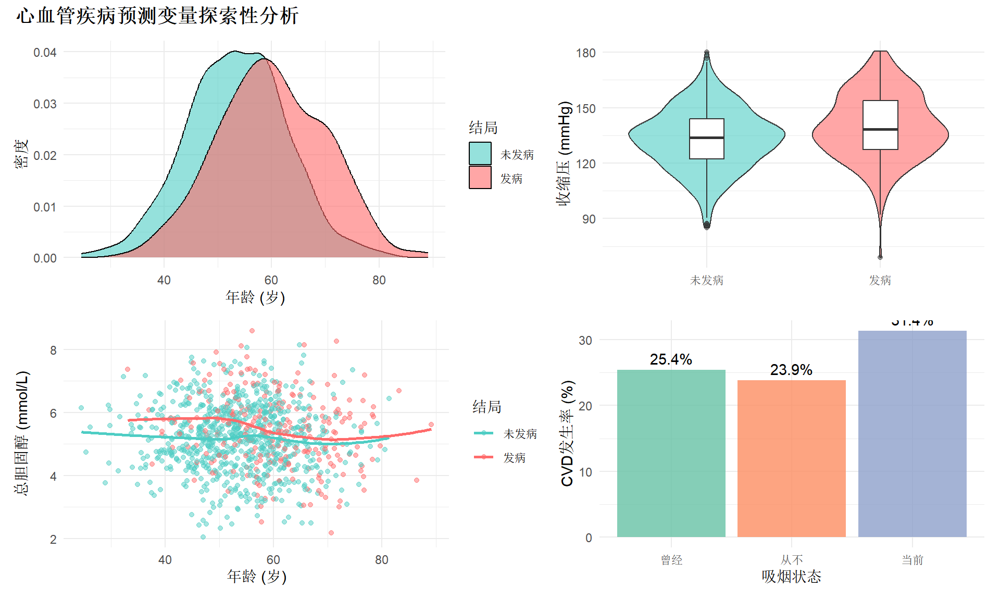
缺失值处理
# 检查缺失值
library(naniar)
# 人为引入部分缺失值(模拟真实场景)
cvd_data_missing <- cvd_data |>
mutate(
hdl = ifelse(runif(n()) < 0.05, NA, hdl),
bmi = ifelse(runif(n()) < 0.08, NA, bmi),
smoking = ifelse(runif(n()) < 0.03, NA, smoking)
)
# 缺失值可视化
gg_miss_var(cvd_data_missing, show_pct = TRUE) +
labs(title = "各变量缺失比例", y = "缺失数量") +
theme_minimal()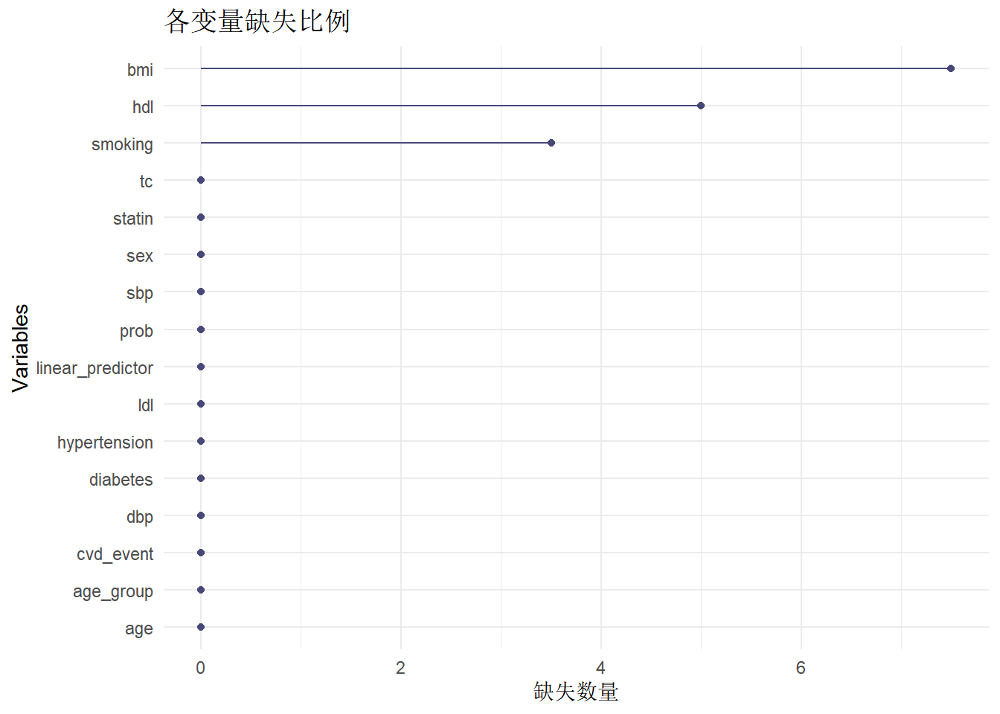
# 多重插补
library(mice)
# 选择建模变量
vars_for_imputation <- c("age", "sex", "sbp", "tc", "hdl", "bmi",
"smoking", "diabetes", "cvd_event")
imputed_data <- mice(
cvd_data_missing[vars_for_imputation],
m = 5, # 5个插补数据集
method = "pmm", # 预测均值匹配法
seed = 2026,
printFlag = FALSE
)
# 查看插补质量
densityplot(imputed_data, ~ hdl + bmi)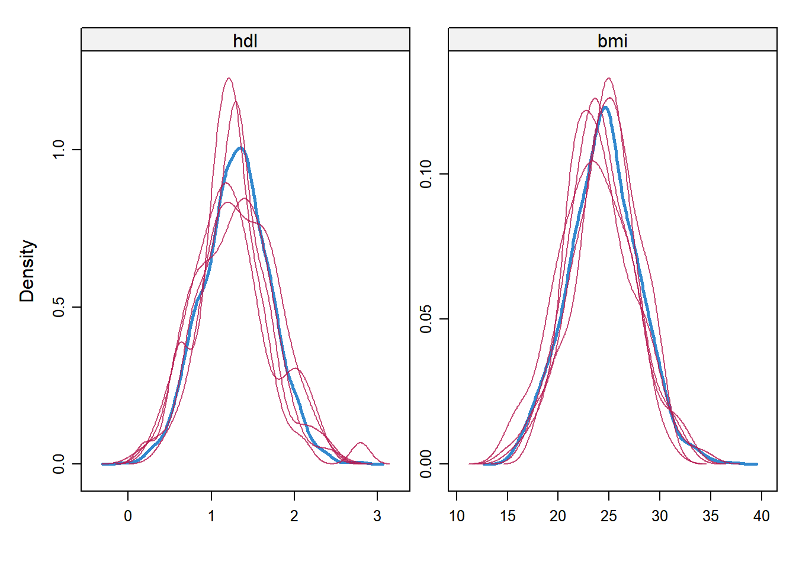
模型构建与变量筛选
变量筛选策略
常用的变量筛选方法:
| 方法 | 优点 | 缺点 | 推荐场景 |
|---|---|---|---|
| 单因素筛选 | 简单快速 | 忽略交互和混杂 | 初步筛选 |
| 逐步回归 | 自动化 | 易过拟合、不稳定 | 变量较多时 |
| LASSO | 同时选择+正则化 | 需调参 | 高维数据 |
| 专业知识 | 临床可解释 | 可能遗漏变量 | 任何场景(必须结合) |
| 全子集 | 找到最优组合 | 计算量大 | 变量<15个 |
推荐策略:专业知识 + 统计筛选
# 1. 单因素分析
library(broom)
library(purrr)
predictors <- c("age", "sex", "sbp", "tc", "hdl", "bmi",
"smoking", "diabetes", "hypertension")
univariate_results <- map_dfr(predictors, function(var) {
formula_str <- paste0("cvd_event ~ ", var)
model <- glm(as.formula(formula_str),
data = cvd_data,
family = binomial)
tidy(model, exponentiate = TRUE, conf.int = TRUE) |>
filter(term != "(Intercept)") |>
mutate(variable = var)
}) |>
select(variable, term, estimate, conf.low, conf.high, p.value) |>
arrange(p.value)
# 格式化输出
univariate_results |>
mutate(
OR_CI = sprintf("%.2f (%.2f-%.2f)", estimate, conf.low, conf.high),
p.value = ifelse(p.value < 0.001, "<0.001", sprintf("%.3f", p.value))
) |>
select(variable, term, OR_CI, p.value) |>
gt() |>
tab_header(title = "单因素分析结果") |>
cols_label(
variable = "变量",
term = "水平",
OR_CI = "OR (95% CI)",
p.value = "P值"
) |>
tab_style(
style = cell_fill(color = "#FFE5E5"),
locations = cells_body(
columns = p.value,
rows = p.value < 0.05
)
) |>
tab_options(
table.font.size = px(14),
data_row.padding = px(8)
)| 单因素分析结果 | |||
| 变量 | 水平 | OR (95% CI) | P值 |
|---|---|---|---|
| age | age | 1.08 (1.06-1.09) | <0.001 |
| sbp | sbp | 1.02 (1.01-1.03) | <0.001 |
| hypertension | hypertension | 1.68 (1.26-2.26) | <0.001 |
| tc | tc | 1.26 (1.11-1.44) | <0.001 |
| sex | sex女 | 0.65 (0.49-0.87) | 0.004 |
| hdl | hdl | 0.64 (0.45-0.90) | 0.012 |
| diabetes | diabetes | 1.44 (0.98-2.09) | 0.058 |
| bmi | bmi | 1.04 (1.00-1.08) | 0.061 |
| smoking | smoking当前 | 1.34 (0.91-1.97) | 0.135 |
| smoking | smoking从不 | 0.92 (0.65-1.29) | 0.623 |
多因素Logistic回归模型
# 完整模型(包含所有候选变量)
full_model <- glm(
cvd_event ~ age + sex + sbp + tc + hdl + bmi +
smoking + diabetes + hypertension,
data = cvd_data,
family = binomial(link = "logit")
)
# 模型摘要
summary(full_model)
Call:
glm(formula = cvd_event ~ age + sex + sbp + tc + hdl + bmi +
smoking + diabetes + hypertension, family = binomial(link = "logit"),
data = cvd_data)
Coefficients:
Estimate Std. Error z value Pr(>|z|)
(Intercept) -11.727753 1.288710 -9.100 < 2e-16 ***
age 0.082403 0.009056 9.100 < 2e-16 ***
sex女 -0.482514 0.160276 -3.011 0.00261 **
sbp 0.025252 0.005714 4.419 9.91e-06 ***
tc 0.348631 0.074245 4.696 2.66e-06 ***
hdl -0.416472 0.198972 -2.093 0.03634 *
bmi 0.048427 0.022917 2.113 0.03459 *
smoking从不 -0.046124 0.190770 -0.242 0.80895
smoking当前 0.399705 0.218064 1.833 0.06681 .
diabetes 0.466384 0.214424 2.175 0.02963 *
hypertension 0.213800 0.194200 1.101 0.27093
---
Signif. codes: 0 '***' 0.001 '**' 0.01 '*' 0.05 '.' 0.1 ' ' 1
(Dispersion parameter for binomial family taken to be 1)
Null deviance: 1148.20 on 999 degrees of freedom
Residual deviance: 975.87 on 989 degrees of freedom
AIC: 997.87
Number of Fisher Scoring iterations: 5# 格式化系数表
tidy(full_model, exponentiate = TRUE, conf.int = TRUE) |>
filter(term != "(Intercept)") |>
mutate(
OR_CI = sprintf("%.2f (%.2f-%.2f)", estimate, conf.low, conf.high),
p.value = ifelse(p.value < 0.001, "<0.001", sprintf("%.3f", p.value))
) |>
select(term, OR_CI, p.value) |>
gt() |>
tab_header(title = "多因素Logistic回归结果") |>
cols_label(
term = "变量",
OR_CI = "调整OR (95% CI)",
p.value = "P值"
) |>
tab_style(
style = cell_text(weight = "bold"),
locations = cells_body(
columns = everything(),
rows = p.value < 0.05
)
) |>
tab_options(
table.font.size = px(14),
data_row.padding = px(8)
)| 多因素Logistic回归结果 | ||
| 变量 | 调整OR (95% CI) | P值 |
|---|---|---|
| age | 1.09 (1.07-1.11) | <0.001 |
| sex女 | 0.62 (0.45-0.84) | 0.003 |
| sbp | 1.03 (1.01-1.04) | <0.001 |
| tc | 1.42 (1.23-1.64) | <0.001 |
| hdl | 0.66 (0.45-0.97) | 0.036 |
| bmi | 1.05 (1.00-1.10) | 0.035 |
| smoking从不 | 0.95 (0.66-1.39) | 0.809 |
| smoking当前 | 1.49 (0.97-2.29) | 0.067 |
| diabetes | 1.59 (1.04-2.42) | 0.030 |
| hypertension | 1.24 (0.85-1.81) | 0.271 |
LASSO变量选择
library(glmnet)
# 准备矩阵格式数据
X <- model.matrix(
~ age + sex + sbp + tc + hdl + bmi + smoking + diabetes + hypertension,
data = cvd_data
)[, -1] # 去掉截距列
y <- cvd_data$cvd_event
# 交叉验证选择最优lambda
set.seed(2026)
cv_lasso <- cv.glmnet(X, y, family = "binomial", alpha = 1, nfolds = 10)
# 可视化lambda选择
plot(cv_lasso)
title("LASSO交叉验证: lambda选择", line = 2.5)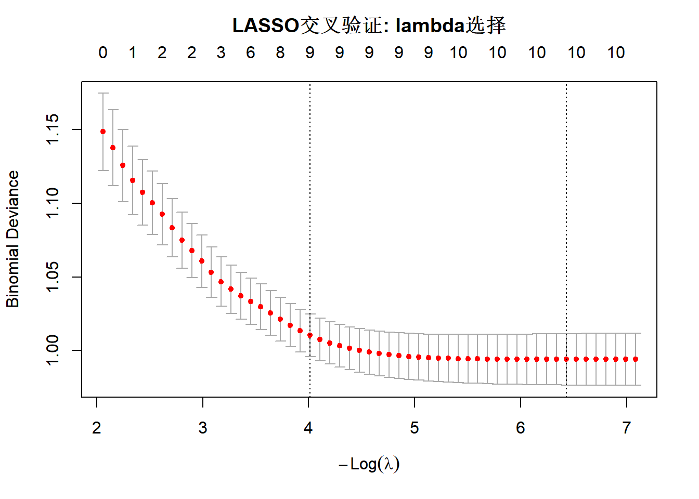
# 提取最优lambda时的系数
lasso_coef <- coef(cv_lasso, s = "lambda.min")
print(lasso_coef)11 x 1 sparse Matrix of class "dgCMatrix"
lambda.min
(Intercept) -11.40972065
age 0.08055230
sex女 -0.45778815
sbp 0.02463195
tc 0.33430825
hdl -0.39175118
bmi 0.04525874
smoking从不 -0.03171543
smoking当前 0.38429547
diabetes 0.43439285
hypertension 0.19684261# 选出非零系数的变量
selected_vars <- rownames(lasso_coef)[lasso_coef[,1] != 0][-1] # 去掉截距
cat("\nLASSO选出的变量:", paste(selected_vars, collapse = ", "), "\n")
LASSO选出的变量: age, sex女, sbp, tc, hdl, bmi, smoking从不, smoking当前, diabetes, hypertension 简化模型(基于LASSO结果)
# 根据LASSO和临床意义,建立简化模型
reduced_model <- glm(
cvd_event ~ age + sex + sbp + tc + smoking + diabetes,
data = cvd_data,
family = binomial
)
# 比较完整模型与简化模型
anova(reduced_model, full_model, test = "Chisq")Analysis of Deviance Table
Model 1: cvd_event ~ age + sex + sbp + tc + smoking + diabetes
Model 2: cvd_event ~ age + sex + sbp + tc + hdl + bmi + smoking + diabetes +
hypertension
Resid. Df Resid. Dev Df Deviance Pr(>Chi)
1 992 986.83
2 989 975.87 3 10.967 0.01191 *
---
Signif. codes: 0 '***' 0.001 '**' 0.01 '*' 0.05 '.' 0.1 ' ' 1# AIC比较
cat("\n完整模型AIC:", AIC(full_model), "\n")
完整模型AIC: 997.8673 cat("简化模型AIC:", AIC(reduced_model), "\n")简化模型AIC: 1002.834 # 简化模型系数
tidy(reduced_model, exponentiate = TRUE, conf.int = TRUE) |>
filter(term != "(Intercept)") |>
gt() |>
tab_header(title = "简化模型系数") |>
fmt_number(columns = c(estimate, conf.low, conf.high), decimals = 2) |>
fmt_number(columns = p.value, decimals = 3) |>
tab_options(
table.font.size = px(14),
data_row.padding = px(8)
)| 简化模型系数 | ||||||
| term | estimate | std.error | statistic | p.value | conf.low | conf.high |
|---|---|---|---|---|---|---|
| age | 1.09 | 0.008969144 | 9.217724128 | 0.000 | 1.07 | 1.11 |
| sex女 | 0.62 | 0.159127594 | -3.000187595 | 0.003 | 0.45 | 0.85 |
| sbp | 1.03 | 0.004825737 | 5.727886939 | 0.000 | 1.02 | 1.04 |
| tc | 1.41 | 0.073719960 | 4.619689125 | 0.000 | 1.22 | 1.63 |
| smoking从不 | 1.00 | 0.189111848 | -0.003369439 | 0.997 | 0.69 | 1.45 |
| smoking当前 | 1.61 | 0.215774606 | 2.195151840 | 0.028 | 1.05 | 2.46 |
| diabetes | 1.58 | 0.212965979 | 2.138730963 | 0.032 | 1.03 | 2.39 |
模型性能评价
区分度评价: ROC曲线与AUC
library(pROC)
# 获取预测概率
cvd_data <- cvd_data |>
mutate(
pred_prob_full = predict(full_model, type = "response"),
pred_prob_reduced = predict(reduced_model, type = "response")
)
# 计算ROC
roc_full <- roc(cvd_data$cvd_event, cvd_data$pred_prob_full)
roc_reduced <- roc(cvd_data$cvd_event, cvd_data$pred_prob_reduced)
# 可视化ROC曲线
ggroc(list(
"完整模型" = roc_full,
"简化模型" = roc_reduced
), legacy.axes = TRUE) +
geom_abline(intercept = 0, slope = 1, linetype = "dashed", color = "gray") +
annotate("text", x = 0.7, y = 0.3,
label = sprintf("完整模型 AUC = %.3f", auc(roc_full)),
size = 4) +
annotate("text", x = 0.7, y = 0.2,
label = sprintf("简化模型 AUC = %.3f", auc(roc_reduced)),
size = 4) +
labs(
x = "1 - 特异度 (假阳性率)",
y = "灵敏度 (真阳性率)",
title = "ROC曲线比较",
color = "模型"
) +
theme_minimal(base_size = 12)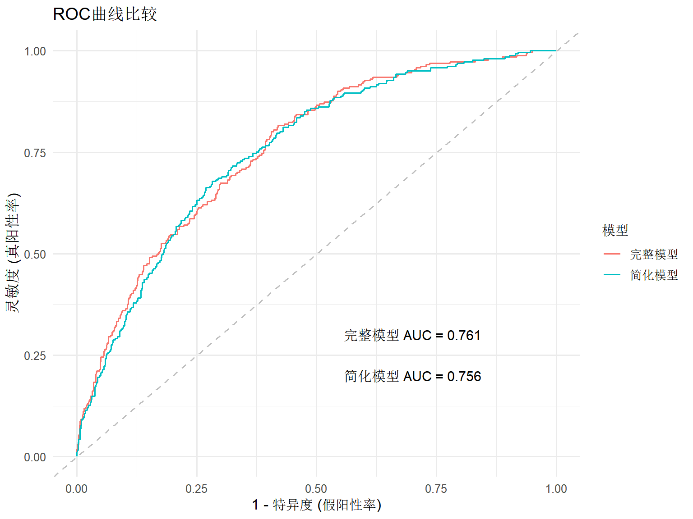
# AUC统计检验
roc.test(roc_full, roc_reduced)
DeLong's test for two correlated ROC curves
data: roc_full and roc_reduced
Z = 0.95178, p-value = 0.3412
alternative hypothesis: true difference in AUC is not equal to 0
95 percent confidence interval:
-0.005189804 0.014988693
sample estimates:
AUC of roc1 AUC of roc2
0.7605390 0.7556395 最优截断值选择
# 使用Youden指数选择最优截断值
coords_full <- coords(roc_full, "best", ret = c("threshold", "sensitivity",
"specificity", "ppv", "npv"))
# 格式化输出
tibble(
指标 = c("最优截断值", "灵敏度", "特异度", "阳性预测值", "阴性预测值"),
值 = c(
sprintf("%.3f", coords_full$threshold),
sprintf("%.1f%%", coords_full$sensitivity * 100),
sprintf("%.1f%%", coords_full$specificity * 100),
sprintf("%.1f%%", coords_full$ppv * 100),
sprintf("%.1f%%", coords_full$npv * 100)
)
) |>
gt() |>
tab_header(title = "基于Youden指数的最优截断值") |>
tab_options(
table.font.size = px(14),
data_row.padding = px(8)
)| 基于Youden指数的最优截断值 | |
| 指标 | 值 |
|---|---|
| 最优截断值 | 0.207 |
| 灵敏度 | 81.6% |
| 特异度 | 58.1% |
| 阳性预测值 | 40.7% |
| 阴性预测值 | 89.9% |
校准度评价
library(rms)
# 准备数据(使用rms包格式)
dd <- datadist(cvd_data)
options(datadist = "dd")
# 使用rms的lrm函数重新拟合
lrm_model <- lrm(
cvd_event ~ age + sex + sbp + tc + smoking + diabetes,
data = cvd_data,
x = TRUE, y = TRUE
)
# 1. 校准曲线(Bootstrap法)
par(mfrow = c(1, 2))
cal <- calibrate(lrm_model, B = 200)
plot(cal,
xlab = "预测概率",
ylab = "实际发生率",
main = "校准曲线 (Bootstrap法)")
n=1000 Mean absolute error=0.018 Mean squared error=0.00065
0.9 Quantile of absolute error=0.032# 2. Hosmer-Lemeshow检验(分10组)
library(ResourceSelection)
hl_test <- hoslem.test(cvd_data$cvd_event, cvd_data$pred_prob_reduced, g = 10)
print(hl_test)
Hosmer and Lemeshow goodness of fit (GOF) test
data: cvd_data$cvd_event, cvd_data$pred_prob_reduced
X-squared = 8.0493, df = 8, p-value = 0.4287# 手动绘制H-L校准图
hl_data <- tibble(
pred = cvd_data$pred_prob_reduced,
obs = cvd_data$cvd_event
) |>
mutate(decile = ntile(pred, 10)) |>
group_by(decile) |>
summarise(
pred_mean = mean(pred),
obs_mean = mean(obs),
n = n(),
.groups = "drop"
)
plot(hl_data$pred_mean, hl_data$obs_mean,
xlim = c(0, 1), ylim = c(0, 1),
xlab = "预测概率", ylab = "观测概率",
main = "Hosmer-Lemeshow校准图",
pch = 19, col = "steelblue", cex = 1.5)
abline(0, 1, col = "red", lty = 2)
grid()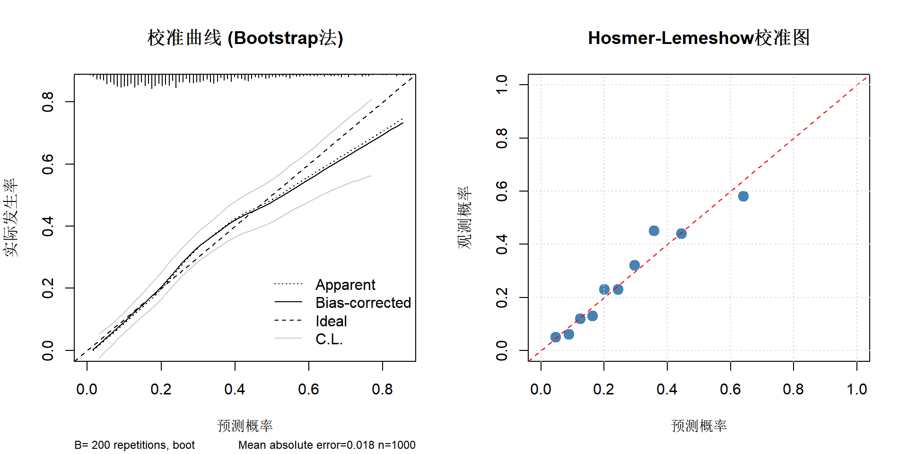
par(mfrow = c(1, 1))Brier分数
# 计算Brier分数
brier_score <- mean((cvd_data$pred_prob_reduced - cvd_data$cvd_event)^2)
cat("Brier分数:", sprintf("%.4f", brier_score), "\n")Brier分数: 0.1632 cat("解释: 0 = 完美预测, 0.25 = 无信息预测\n")解释: 0 = 完美预测, 0.25 = 无信息预测# 计算标准化Brier分数
brier_null <- mean(cvd_data$cvd_event) * (1 - mean(cvd_data$cvd_event))
brier_scaled <- 1 - brier_score / brier_null
cat("标准化Brier分数:", sprintf("%.4f", brier_scaled), "\n")标准化Brier分数: 0.1538 cat("解释: 相对于null模型的改进程度\n")解释: 相对于null模型的改进程度模型验证
内部验证: Bootstrap法
library(rms)
# Bootstrap验证(200次重采样)
set.seed(2026)
validate_result <- validate(lrm_model, B = 200)
# 提取关键指标
print(validate_result) index.orig training test optimism index.corrected Lower Upper
Dxy 0.5113 0.5149 0.5004 0.0145 0.4968 0.4302 0.5652
R2 0.2183 0.2226 0.2105 0.0120 0.2062 0.1473 0.2609
Intercept 0.0000 0.0000 -0.0243 0.0243 -0.0243 -0.2607 0.2590
Slope 1.0000 1.0000 0.9629 0.0371 0.9629 0.7710 1.1939
Emax 0.0000 0.0000 0.0348 -0.0348 0.0348 -0.0064 0.0935
D 0.1604 0.1638 0.1542 0.0096 0.1507 0.1028 0.1958
U -0.0020 -0.0020 0.0001 -0.0021 0.0001 -0.0032 0.0065
Q 0.1624 0.1658 0.1541 0.0117 0.1507 0.0982 0.1955
B 0.1632 0.1619 0.1647 -0.0028 0.1660 0.1533 0.1793
g 1.1758 1.1952 1.1460 0.0492 1.1266 0.9003 1.3321
gp 0.1919 0.1931 0.1885 0.0046 0.1874 0.1601 0.2168
n
Dxy 200
R2 200
Intercept 200
Slope 200
Emax 200
D 200
U 200
Q 200
B 200
g 200
gp 200# 格式化输出
tibble(
指标 = c("Dxy (Discrimination)", "R² (Explained variance)",
"Intercept (Calibration)", "Slope (Calibration)"),
原始值 = sprintf("%.4f", validate_result[c("Dxy", "R2", "Intercept", "Slope"), "index.orig"]),
训练集 = sprintf("%.4f", validate_result[c("Dxy", "R2", "Intercept", "Slope"), "training"]),
测试集 = sprintf("%.4f", validate_result[c("Dxy", "R2", "Intercept", "Slope"), "test"]),
乐观度 = sprintf("%.4f", validate_result[c("Dxy", "R2", "Intercept", "Slope"), "optimism"]),
校正值 = sprintf("%.4f", validate_result[c("Dxy", "R2", "Intercept", "Slope"), "index.corrected"])
) |>
gt() |>
tab_header(title = "Bootstrap内部验证结果 (B=200)") |>
tab_style(
style = cell_fill(color = "#E8F4F8"),
locations = cells_body(columns = c(原始值, 校正值))
) |>
tab_options(
table.font.size = px(14),
data_row.padding = px(8)
)| Bootstrap内部验证结果 (B=200) | |||||
| 指标 | 原始值 | 训练集 | 测试集 | 乐观度 | 校正值 |
|---|---|---|---|---|---|
| Dxy (Discrimination) | 0.5113 | 0.5149 | 0.5004 | 0.0145 | 0.4968 |
| R² (Explained variance) | 0.2183 | 0.2226 | 0.2105 | 0.0120 | 0.2062 |
| Intercept (Calibration) | 0.0000 | 0.0000 | -0.0243 | 0.0243 | -0.0243 |
| Slope (Calibration) | 1.0000 | 1.0000 | 0.9629 | 0.0371 | 0.9629 |
# C-index校正
c_index_corrected <- (validate_result["Dxy", "index.corrected"] + 1) / 2
cat("\n校正后的C-index:", sprintf("%.3f", c_index_corrected), "\n")
校正后的C-index: 0.748 交叉验证
library(caret)
# 10折交叉验证
set.seed(2026)
train_control <- trainControl(
method = "cv",
number = 10,
classProbs = TRUE,
summaryFunction = twoClassSummary,
savePredictions = "final"
)
# 准备数据(caret要求因子型结局)
cvd_data_cv <- cvd_data |>
mutate(
outcome = factor(cvd_event, levels = c(0, 1), labels = c("No", "Yes"))
)
# 训练模型
cv_model <- train(
outcome ~ age + sex + sbp + tc + smoking + diabetes,
data = cvd_data_cv,
method = "glm",
family = "binomial",
trControl = train_control,
metric = "ROC"
)
# 输出结果
print(cv_model)Generalized Linear Model
1000 samples
6 predictor
2 classes: 'No', 'Yes'
No pre-processing
Resampling: Cross-Validated (10 fold)
Summary of sample sizes: 900, 900, 900, 900, 900, 899, ...
Resampling results:
ROC Sens Spec
0.74689 0.9377638 0.2296296cat("\n交叉验证平均AUC:", sprintf("%.3f", cv_model$results$ROC), "\n")
交叉验证平均AUC: 0.747 模拟外部验证
# 模拟一个外部验证队列(500人,来自不同人群)
n_ext <- 500
set.seed(2027)
external_data <- tibble(
age = rnorm(n_ext, mean = 58, sd = 11), # 年龄稍大
sex = sample(c("男", "女"), n_ext, replace = TRUE, prob = c(0.55, 0.45)),
sbp = rnorm(n_ext, mean = 138, sd = 20), # 血压稍高
tc = rnorm(n_ext, mean = 5.4, sd = 1.2),
smoking = sample(c("从不", "曾经", "当前"), n_ext, replace = TRUE,
prob = c(0.45, 0.30, 0.25)),
diabetes = sample(c(0, 1), n_ext, replace = TRUE, prob = c(0.82, 0.18))
) |>
mutate(
linear_predictor = -8.5 + 0.065 * age + 0.55 * (sex == "男") +
0.022 * sbp + 0.32 * (tc - 5) + 0.45 * (smoking == "当前") +
0.65 * diabetes,
prob = 1 / (1 + exp(-linear_predictor)),
cvd_event = rbinom(n_ext, 1, prob)
)
# 使用原模型预测
external_data$pred_prob <- predict(reduced_model, newdata = external_data,
type = "response")
# 外部验证的AUC
roc_external <- roc(external_data$cvd_event, external_data$pred_prob)
cat("外部验证AUC:", sprintf("%.3f", auc(roc_external)), "\n")外部验证AUC: 0.723 # 外部验证的校准曲线
ext_cal_data <- external_data |>
mutate(decile = ntile(pred_prob, 10)) |>
group_by(decile) |>
summarise(
pred_mean = mean(pred_prob),
obs_mean = mean(cvd_event),
n = n(),
.groups = "drop"
)
ggplot(ext_cal_data, aes(x = pred_mean, y = obs_mean)) +
geom_point(size = 3, color = "steelblue") +
geom_smooth(method = "loess", se = TRUE, color = "darkblue") +
geom_abline(intercept = 0, slope = 1, linetype = "dashed", color = "red") +
labs(
x = "预测概率",
y = "观测概率",
title = "外部验证队列校准曲线"
) +
coord_fixed(xlim = c(0, 1), ylim = c(0, 1)) +
theme_minimal()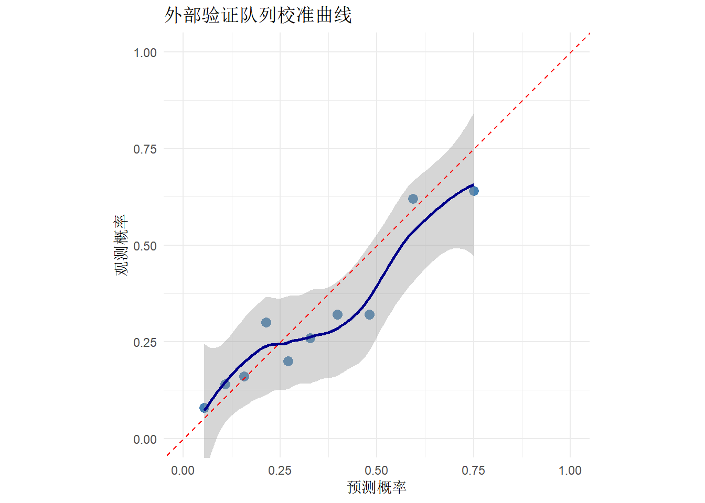
临床实用性评价
决策曲线分析 (DCA)
library(dcurves)
# 决策曲线分析
dca_result <- dca(
cvd_event ~ pred_prob_reduced,
data = cvd_data,
thresholds = seq(0, 0.5, by = 0.01)
)
# 绘制决策曲线
plot(dca_result,
smooth = TRUE,
span = 0.2) +
labs(
x = "风险阈值",
y = "净获益",
title = "决策曲线分析"
) +
theme_minimal()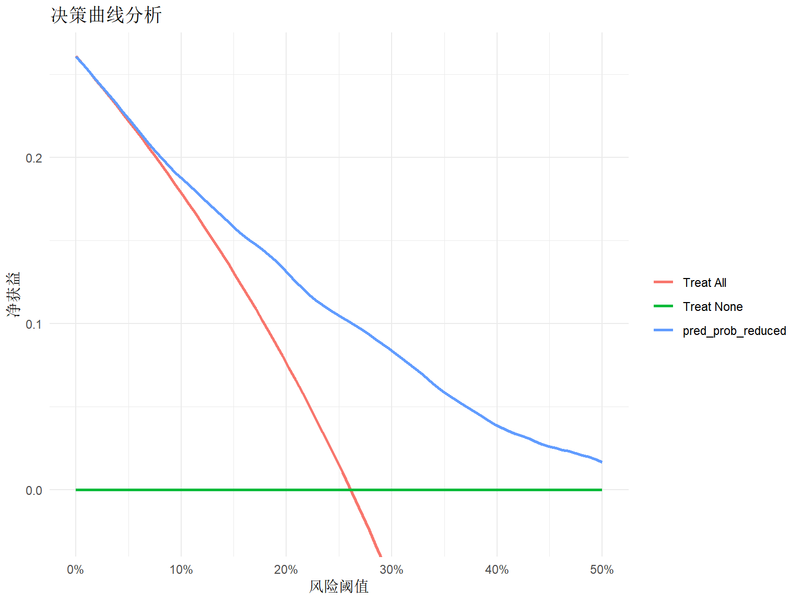
列线图 (Nomogram)
library(rms)
# 绘制列线图
nom <- nomogram(lrm_model,
fun = plogis,
funlabel = "CVD风险",
fun.at = c(0.01, 0.05, 0.1, 0.2, 0.3, 0.5, 0.7, 0.9))
plot(nom, xfrac = 0.3)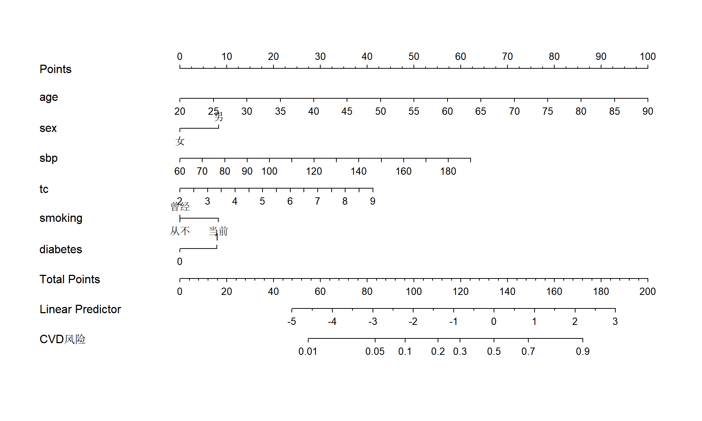
风险分层
# 根据预测概率分层
cvd_data <- cvd_data |>
mutate(
risk_group = cut(pred_prob_reduced,
breaks = c(0, 0.05, 0.10, 0.20, 1),
labels = c("低危(<5%)", "中危(5-10%)",
"高危(10-20%)", "极高危(≥20%)"),
include.lowest = TRUE)
)
# 各风险组实际发生率
risk_summary <- cvd_data |>
group_by(risk_group) |>
summarise(
n = n(),
events = sum(cvd_event),
rate = mean(cvd_event) * 100,
.groups = "drop"
)
risk_summary |>
gt() |>
tab_header(title = "风险分层与实际发生率") |>
cols_label(
risk_group = "风险组",
n = "人数",
events = "事件数",
rate = "实际发生率(%)"
) |>
fmt_number(columns = rate, decimals = 1) |>
tab_options(
table.font.size = px(14),
data_row.padding = px(8)
)| 风险分层与实际发生率 | |||
| 风险组 | 人数 | 事件数 | 实际发生率(%) |
|---|---|---|---|
| 低危(<5%) | 53 | 1 | 1.9 |
| 中危(5-10%) | 130 | 10 | 7.7 |
| 高危(10-20%) | 265 | 35 | 13.2 |
| 极高危(≥20%) | 552 | 215 | 38.9 |
# 可视化风险分层
ggplot(cvd_data, aes(x = risk_group, fill = factor(cvd_event))) +
geom_bar(position = "fill") +
scale_fill_manual(values = c("#4ECDC4", "#FF6B6B"),
labels = c("未发病", "发病")) +
scale_y_continuous(labels = scales::percent) +
labs(
x = "风险分层",
y = "比例",
fill = "结局",
title = "各风险组结局分布"
) +
theme_minimal()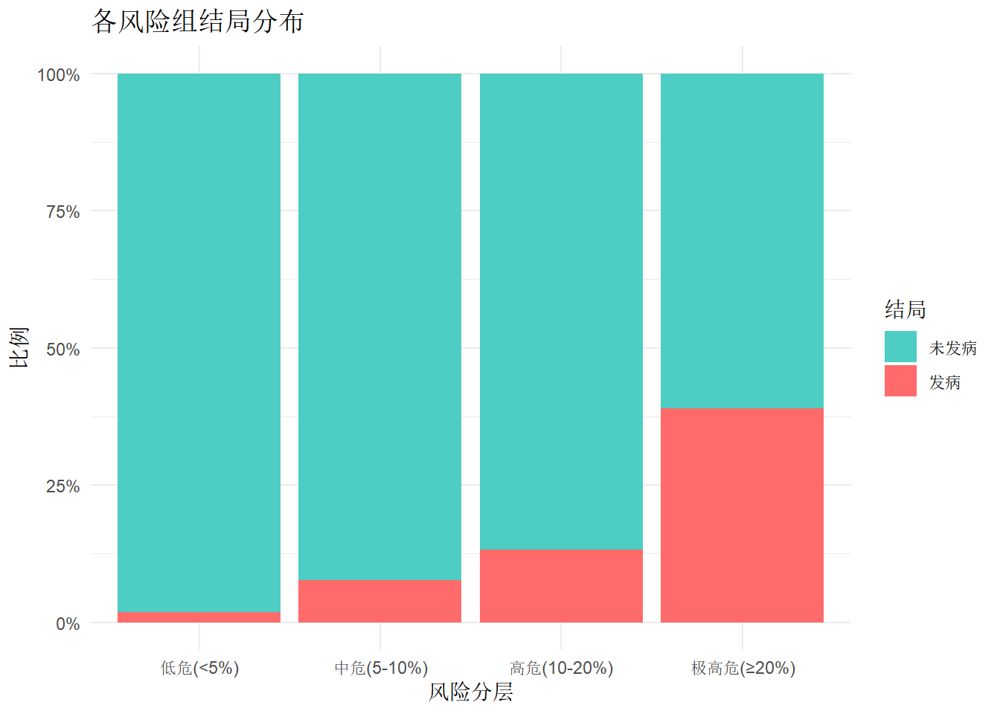
模型展示与应用
构建预测函数
# 创建便于使用的预测函数
predict_cvd_risk <- function(age, sex, sbp, tc, smoking, diabetes) {
# 参数验证
if (age < 18 | age > 100) stop("年龄应在18-100岁之间")
if (!sex %in% c("男", "女")) stop("性别应为'男'或'女'")
if (sbp < 80 | sbp > 200) stop("收缩压应在80-200mmHg之间")
if (tc < 2 | tc > 10) stop("总胆固醇应在2-10mmol/L之间")
if (!smoking %in% c("从不", "曾经", "当前")) {
stop("吸烟状态应为'从不'、'曾经'或'当前'")
}
if (!diabetes %in% c(0, 1)) stop("糖尿病应为0(无)或1(有)")
# 构建数据框
new_data <- data.frame(
age = age,
sex = sex,
sbp = sbp,
tc = tc,
smoking = smoking,
diabetes = diabetes
)
# 预测
risk <- predict(reduced_model, newdata = new_data, type = "response")
# 风险分层
risk_level <- cut(risk,
breaks = c(0, 0.05, 0.10, 0.20, 1),
labels = c("低危", "中危", "高危", "极高危"))
# 返回结果
list(
risk_probability = round(risk * 100, 2),
risk_level = as.character(risk_level),
interpretation = sprintf(
"该患者5年心血管疾病发病风险为%.2f%%,属于%s人群。",
risk * 100, risk_level
)
)
}
# 示例使用
predict_cvd_risk(
age = 60,
sex = "男",
sbp = 145,
tc = 5.8,
smoking = "当前",
diabetes = 1
)$risk_probability
1
64.33
$risk_level
[1] "极高危"
$interpretation
[1] "该患者5年心血管疾病发病风险为64.33%,属于极高危人群。"批量预测与导出
# 批量预测示例
new_patients <- tibble(
patient_id = 1:5,
age = c(55, 62, 48, 70, 58),
sex = c("男", "女", "男", "男", "女"),
sbp = c(138, 152, 128, 165, 142),
tc = c(5.2, 6.1, 4.8, 5.9, 5.5),
smoking = c("从不", "曾经", "当前", "从不", "曾经"),
diabetes = c(0, 1, 0, 1, 0)
)
# 预测
new_patients <- new_patients |>
mutate(
cvd_risk = predict(reduced_model, newdata = new_patients, type = "response"),
risk_percent = round(cvd_risk * 100, 2),
risk_group = cut(cvd_risk,
breaks = c(0, 0.05, 0.10, 0.20, 1),
labels = c("低危", "中危", "高危", "极高危"))
)
new_patients |>
select(patient_id, age, sex, sbp, tc, smoking, diabetes,
risk_percent, risk_group) |>
gt() |>
tab_header(title = "新患者风险预测结果") |>
cols_label(
patient_id = "患者编号",
age = "年龄",
sex = "性别",
sbp = "收缩压",
tc = "总胆固醇",
smoking = "吸烟",
diabetes = "糖尿病",
risk_percent = "风险(%)",
risk_group = "风险分层"
) |>
tab_options(
table.font.size = px(14),
data_row.padding = px(8)
)| 新患者风险预测结果 | ||||||||
| 患者编号 | 年龄 | 性别 | 收缩压 | 总胆固醇 | 吸烟 | 糖尿病 | 风险(%) | 风险分层 |
|---|---|---|---|---|---|---|---|---|
| 1 | 55 | 男 | 138 | 5.2 | 从不 | 0 | 24.03 | 极高危 |
| 2 | 62 | 女 | 152 | 6.1 | 曾经 | 1 | 52.49 | 极高危 |
| 3 | 48 | 男 | 128 | 4.8 | 当前 | 0 | 15.86 | 高危 |
| 4 | 70 | 男 | 165 | 5.9 | 从不 | 1 | 82.19 | 极高危 |
| 5 | 58 | 女 | 142 | 5.5 | 曾经 | 0 | 23.73 | 极高危 |
# 导出为CSV(可选)
# write.csv(new_patients, "cvd_risk_predictions.csv", row.names = FALSE)进阶主题
机器学习模型对比
library(randomForest)
# 随机森林
set.seed(2026)
rf_model <- randomForest(
factor(cvd_event) ~ age + sex + sbp + tc + smoking + diabetes,
data = cvd_data,
ntree = 500,
importance = TRUE
)
# RF预测
cvd_data$pred_rf <- predict(rf_model, type = "prob")[, 2]
# 性能对比
roc_rf <- roc(cvd_data$cvd_event, cvd_data$pred_rf)
tibble(
模型 = c("Logistic回归", "随机森林"),
AUC = c(auc(roc_reduced), auc(roc_rf))
) |>
mutate(AUC = sprintf("%.3f", AUC)) |>
gt() |>
tab_header(title = "不同模型性能对比") |>
tab_options(
table.font.size = px(14),
data_row.padding = px(8)
)| 不同模型性能对比 | |
| 模型 | AUC |
|---|---|
| Logistic回归 | 0.756 |
| 随机森林 | 0.697 |
# ROC曲线对比
ggroc(list(
"Logistic回归" = roc_reduced,
"随机森林" = roc_rf
), legacy.axes = TRUE) +
geom_abline(intercept = 0, slope = 1, linetype = "dashed") +
labs(
x = "1 - 特异度",
y = "灵敏度",
title = "模型性能对比",
color = "模型"
) +
theme_minimal()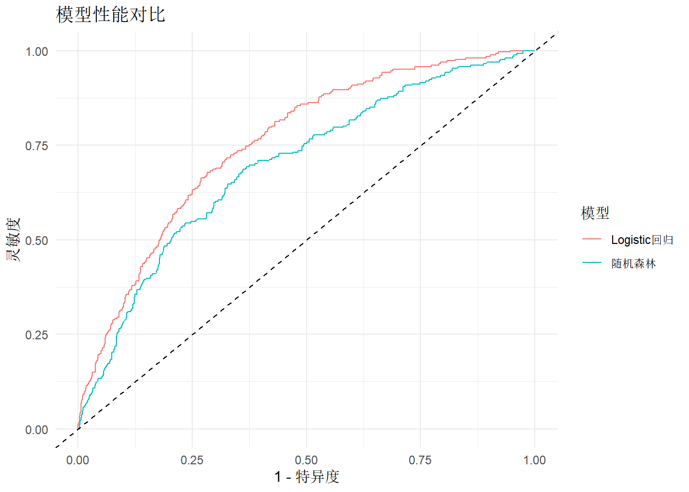
变量重要性分析
library(tidyr)
# 1. Logistic回归的变量重要性(标准化系数)
importance_lr <- tidy(reduced_model) |>
filter(term != "(Intercept)") |>
mutate(
std_coef = abs(estimate),
variable = term
) |>
select(variable, std_coef) |>
arrange(desc(std_coef))
# 2. 随机森林的变量重要性
importance_rf <- importance(rf_model) |>
as.data.frame() |>
tibble::rownames_to_column("variable") |>
select(variable, MeanDecreaseGini)
# 合并并可视化
importance_combined <- importance_lr |>
left_join(importance_rf, by = "variable") |>
pivot_longer(cols = -variable, names_to = "method", values_to = "importance")
ggplot(importance_combined, aes(x = reorder(variable, importance),
y = importance, fill = method)) +
geom_col(position = "dodge") +
coord_flip() +
scale_fill_brewer(palette = "Set2",
labels = c("Gini重要性(RF)", "标准化系数(LR)")) +
labs(
x = "",
y = "重要性",
fill = "方法",
title = "变量重要性对比"
) +
theme_minimal()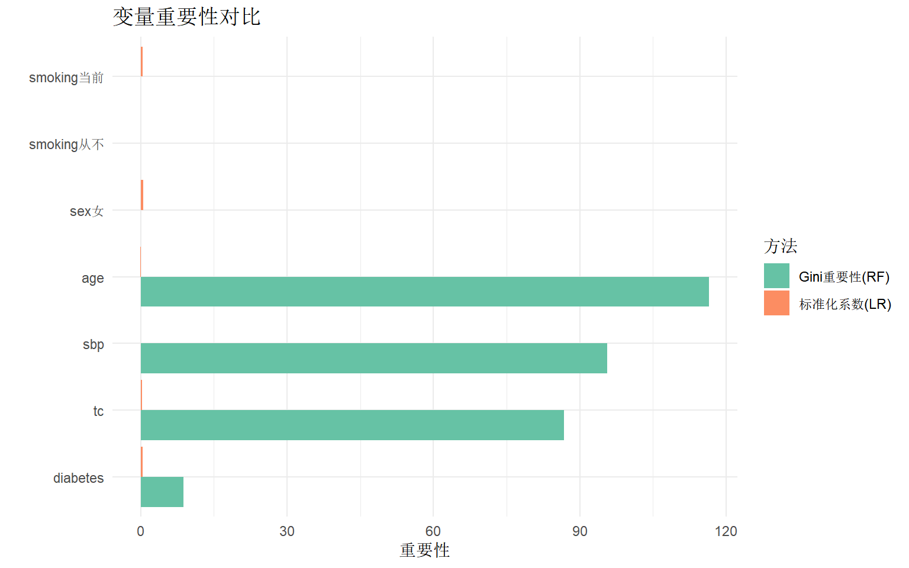
非线性关系探索
library(mgcv)
# GAM模型探索非线性
gam_model <- gam(
cvd_event ~ s(age) + sex + s(sbp) + s(tc) + smoking + diabetes,
data = cvd_data,
family = binomial
)
# 可视化平滑项
par(mfrow = c(1, 3))
plot(gam_model, select = 1, main = "年龄的非线性效应",
shade = TRUE, col = "steelblue")
plot(gam_model, select = 2, main = "收缩压的非线性效应",
shade = TRUE, col = "steelblue")
plot(gam_model, select = 3, main = "胆固醇的非线性效应",
shade = TRUE, col = "steelblue")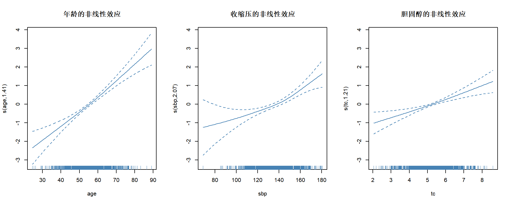
par(mfrow = c(1, 1))
# 比较AUC
cvd_data$pred_gam <- predict(gam_model, type = "response")
roc_gam <- roc(cvd_data$cvd_event, cvd_data$pred_gam)
cat("GAM模型AUC:", sprintf("%.3f", auc(roc_gam)), "\n")GAM模型AUC: 0.760 cat("Logistic模型AUC:", sprintf("%.3f", auc(roc_reduced)), "\n")Logistic模型AUC: 0.756 常见问题与注意事项
1. 样本量与事件数
最小样本量经验法则:
- EPV (Events Per Variable): 每个预测变量至少需要10-20个事件
- 例如: 10个预测变量, 结局发生率10%, 需要样本量 ≥ 1000-2000
# 检查当前数据
n_events <- sum(cvd_data$cvd_event)
n_predictors <- 6 # reduced_model的预测变量数
epv <- n_events / n_predictors
cat("事件数:", n_events, "\n")事件数: 261 cat("预测变量数:", n_predictors, "\n")预测变量数: 6 cat("EPV:", round(epv, 1), "\n")EPV: 43.5 cat("评价:", ifelse(epv >= 10, "✓ 样本量充足", "✗ 样本量不足"), "\n")评价: ✓ 样本量充足 2. 处理类别不平衡
当结局发生率过低(<5%)或过高(>95%)时:
# 结局发生率
event_rate <- mean(cvd_data$cvd_event)
cat("结局发生率:", sprintf("%.1f%%", event_rate * 100), "\n")结局发生率: 26.1% if (event_rate < 0.05 | event_rate > 0.95) {
cat("⚠️ 警告: 类别不平衡严重,考虑:\n")
cat(" - 使用SMOTE等重采样方法\n")
cat(" - 调整分类阈值\n")
cat(" - 使用稀有事件logistic回归\n")
} else {
cat("✓ 类别平衡度可接受\n")
}✓ 类别平衡度可接受3. 过拟合检测
# 检查乐观度
optimism_dxy <- validate_result["Dxy", "optimism"]
optimism_percent <- (optimism_dxy / validate_result["Dxy", "index.orig"]) * 100
cat("Dxy乐观度:", sprintf("%.4f", optimism_dxy), "\n")Dxy乐观度: 0.0145 cat("相对乐观度:", sprintf("%.1f%%", optimism_percent), "\n")相对乐观度: 2.8% cat("评价:", ifelse(optimism_percent < 10,
"✓ 过拟合风险低",
"⚠️ 可能存在过拟合"), "\n")评价: ✓ 过拟合风险低 4. 缺失数据的影响
# 比较完整病例分析 vs 多重插补
# (这里演示概念,实际需要完整实现多重插补)
cat("完整病例分析适用条件:\n")完整病例分析适用条件:cat(" 1. 缺失比例 < 5%\n") 1. 缺失比例 < 5%cat(" 2. 缺失机制为MCAR(完全随机缺失)\n\n") 2. 缺失机制为MCAR(完全随机缺失)cat("多重插补推荐条件:\n")多重插补推荐条件:cat(" 1. 缺失比例 5-40%\n") 1. 缺失比例 5-40%cat(" 2. 缺失机制为MAR(随机缺失)\n") 2. 缺失机制为MAR(随机缺失)cat(" 3. 使用mice包进行m=5-20次插补\n") 3. 使用mice包进行m=5-20次插补5. 模型更新与维护
cat("预测模型需要定期评估:\n\n")预测模型需要定期评估:cat("1. 监测指标:\n")1. 监测指标:cat(" - 每6-12个月检查模型校准度\n") - 每6-12个月检查模型校准度cat(" - 追踪新数据的AUC变化\n") - 追踪新数据的AUC变化cat(" - 监测预测分布漂移\n\n") - 监测预测分布漂移cat("2. 模型更新触发条件:\n")2. 模型更新触发条件:cat(" - AUC下降 > 0.05\n") - AUC下降 > 0.05cat(" - 校准曲线系统性偏离\n") - 校准曲线系统性偏离cat(" - 人群特征显著变化\n") - 人群特征显著变化cat(" - 治疗方案重大改变\n") - 治疗方案重大改变报告撰写要点
TRIPOD声明检查清单
| TRIPOD报告规范检查清单 | ||
| 条目 | 内容 | 建议 |
|---|---|---|
| 标题与摘要 | 明确说明是预测模型研究 | 包含'prediction model'关键词 |
| 研究设计 | 前瞻性/回顾性,队列/病例对照 | 说明数据来源与时间 |
| 结局定义 | 明确结局事件定义与判定标准 | 提供操作性定义 |
| 预测变量 | 列出所有候选变量及测量方法 | 区分连续/分类变量 |
| 样本量 | 报告总样本量与事件数 | 计算EPV |
| 缺失数据 | 报告缺失比例与处理方法 | 使用多重插补 |
| 模型开发 | 详述建模策略与变量筛选 | 避免数据驱动筛选 |
| 模型评价 | 报告区分度、校准度、临床实用性 | AUC + 校准曲线 + DCA |
| 模型验证 | 内部验证(Bootstrap/交叉验证) | 外部验证(独立队列) |
| 模型展示 | 提供列线图或计算器 | 便于临床应用 |
| 解释与局限 | 讨论适用人群与局限性 | 明确不适用场景 |
参考文献
Steyerberg EW. Clinical Prediction Models: A Practical Approach to Development, Validation, and Updating. 2nd ed. Springer; 2019.
Collins GS, Reitsma JB, Altman DG, Moons KG. Transparent reporting of a multivariable prediction model for individual prognosis or diagnosis (TRIPOD): the TRIPOD Statement. BMJ. 2015;350:g7594.
Van Calster B, McLernon DJ, van Smeden M, Wynants L, Steyerberg EW. Calibration: the Achilles heel of predictive analytics. BMC Med. 2019;17(1):230.
Vickers AJ, Elkin EB. Decision curve analysis: a novel method for evaluating prediction models. Med Decis Making. 2006;26(6):565-574.
Riley RD, Snell KI, Ensor J, Burke DL, Harrell FE Jr, Moons KG, Collins GS. Minimum sample size for developing a multivariable prediction model: PART II - binary and time-to-event outcomes. Stat Med. 2019;38(7):1276-1296.
Harrell FE Jr. Regression Modeling Strategies: With Applications to Linear Models, Logistic and Ordinal Regression, and Survival Analysis. 2nd ed. Springer; 2015.
Austin PC, Steyerberg EW. Events per variable (EPV) and the relative performance of different strategies for estimating the out-of-sample validity of logistic regression models. Stat Methods Med Res. 2017;26(2):796-808.
Wynants L, Van Calster B, Collins GS, et al. Prediction models for diagnosis and prognosis of covid-19: systematic review and critical appraisal. BMJ. 2020;369:m1328.